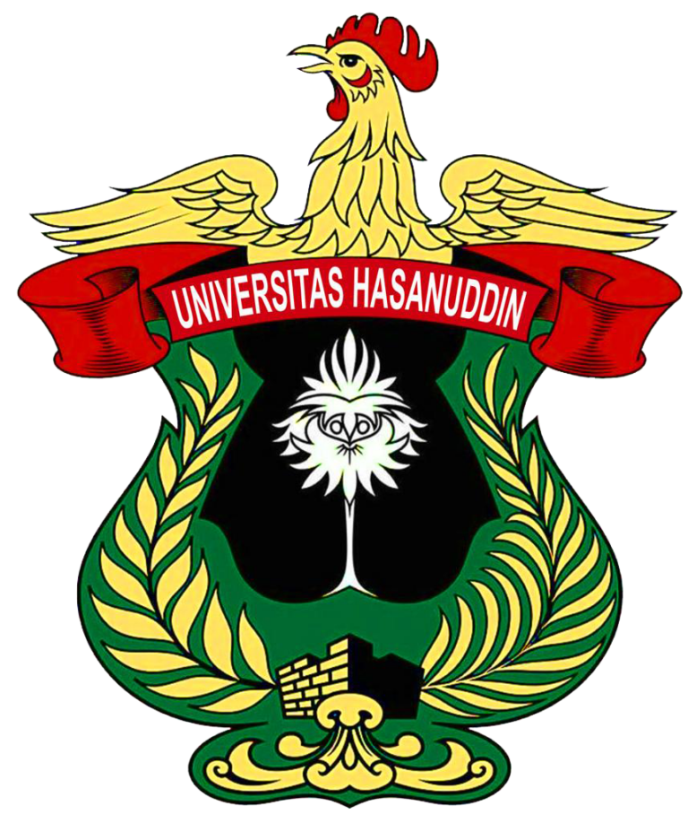

Departemen Teknik Informatika, Fakultas Teknik, Universitas Hasanuddin
Tugas Modul 2 Pemrograman Web oleh Gabriel Tan, NIM D121241071, Kelas B.
Halaman latihan: data dosen dan publikasi yang akan ditampilkan merupakan simulasi pembelajaran, bukan catatan publikasi resmi universitas.